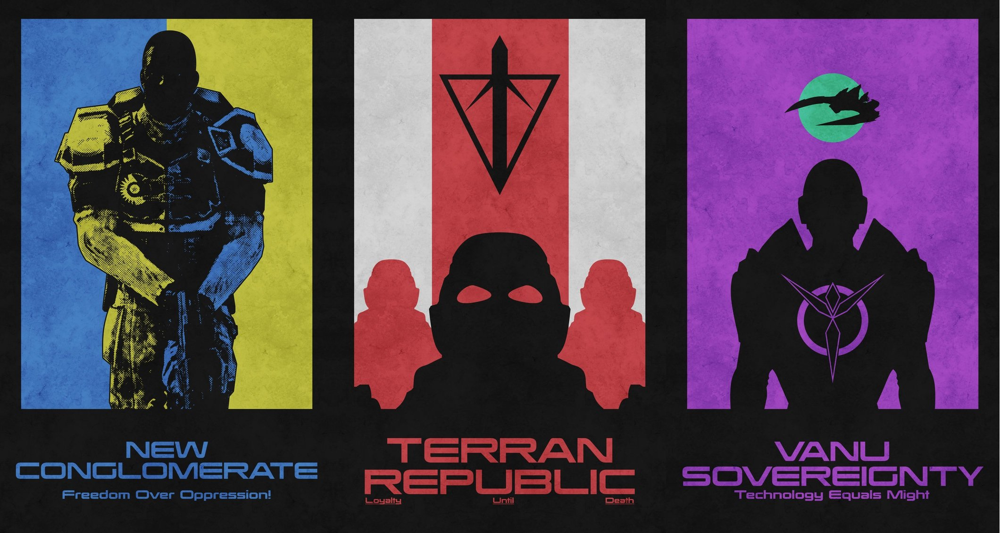
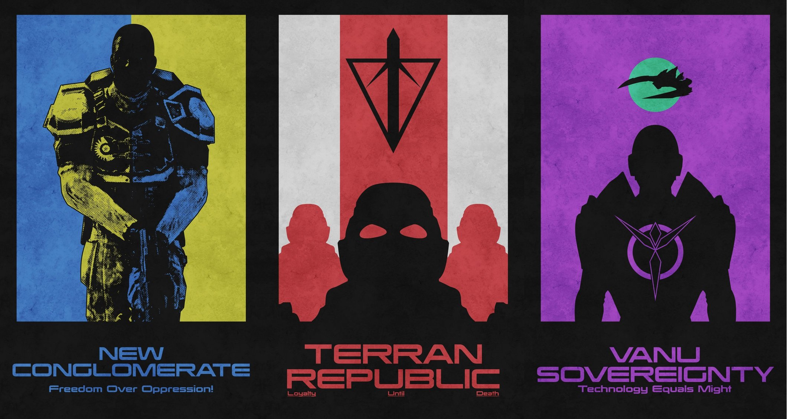

Faction
There are three factions or empires in PlanetSide 2: Terran Republic, New Conglomerate and Vanu Sovereignty.
Each faction has its own ideology and view on the war. All can be read here, and there is some unofficial lore at Encyclopaedia Auraxia. Just don’t take it too seriously, it’s mostly for flavor.
Each faction has access to a few faction-specific weapons and vehicles, and there’s also a large variety of cross-faction vehicles and equipment produced by Nanite Systems.
Terran Republic
An authoritarian government that leverages military might to maintain strict control over the colonial citizens. The Terran Republic is obsessed with the preservation of law and order and are thus seen by some to be an oppressive and dictatorial force, but many view the TR as the only hope for lasting security on Auraxis.
New Conglomerate
Rebels, freedom fighters or terrorists? The New Conglomerate operates as a loosely organized band of dissidents, vehemently opposed to the stranglehold that the Terran Republic has on Auraxis. Led by an unusual quorum of outcasts, industry titans, pirates and former military leaders, the New Conglomerate is unwavering and prepared to achieve their goals by any means necessary.
Vanu Sovereignty
Vanu has taught that only through technology can humanity evolve it's next state of existence. The Vanu Sovereignty is extremely advanced, employing powerful alien technology on the battlefield. Their singular purpose is to uncover the secrets hidden away in ancient artifacts scattered over the surface of Auraxis and they will annihilate anyone who interferes.